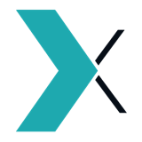

UX Design Manager
GARANTIEMAX GmbH Aug 2024 – Present
Digital service, warranty and insurance platform for kitchens. I own UX across the customer app, the B2B partner platform and the website, plus both design systems and the design process. Freelance, embedded.
- Rebuilt the customer app from a non-functional state into a production mobile product. Customers now file claims in the app instead of by phone.
- Designed the B2B partner platform: a CRM for kitchen partners and internal teams with role-based views, public at the area30 trade fair in 2026.
- Built and maintain two design systems that share tokens and code components across app and platform, with an audit that keeps them aligned per release.
- Working with AI since summer 2024, first for my own work, then in the design process: Figma Make from its first months, AI tooling in the company workflow from early 2026, now an end-to-end setup with published Figma skills, Jira automation, design system extraction and a company-wide knowledge base.
- Founded and run the design board in Jira, and write dev-facing tickets spec-forward so engineering implements without asking.
- Lead one junior designer at a time and wrote the team’s Figma contribution workflow: branch per ticket, review by comment, merge checklist.
- Own the marketing website in Framer: CMS content, partner landing pages and trade fair pages.
- Shipped against trade fair deadlines three years running and a partner product go-live in 2026.